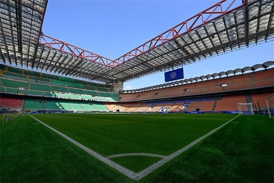

开云体育
开云官网新闻板块
国际米兰宣布与开云体育达成官方合作伙伴关系

近日，开云体育与意大利豪门足球俱乐部国际米兰正式签署合作协议，成为其官方区域合作伙伴。这一合作为双方开拓市场创造了更多机遇，有助于深化体育领域的改革，推动线上线下双通道融合的数字体育新模式。未来，双方将共同为球迷朋友带来更精彩的赛事和更专业的体育资讯。
国际米兰成立于1908年，是一家拥有数千万球迷的顶级足球俱乐部。在2010年的欧冠赛场上，“狂人”穆里尼奥率队一路战胜切尔西、巴塞罗那等豪门强敌，成功闯入欧洲冠军联赛决赛。最终，国际米兰在伯纳乌球场以2-0击败拜仁慕尼黑，斩获队史第三座欧冠冠军，并创造了赛季“五冠王”的伟业，成为首支获得此荣誉的意大利球队。

开云体育是一家专注于在线体育娱乐的领先企业，凭借创新技术和丰富的行业经验，为客户提供高品质的体育娱乐服务。而国际米兰则是历史悠久、享誉国际的足球俱乐部，在意大利足球界和全球足坛拥有卓越声誉。
此次合作将从多方面展开，其中最重要的是开云体育将作为国际米兰的官方合作伙伴，为球迷提供优质的在线娱乐服务。此外，双方还将共同开展市场营销活动，并推出针对国际米兰球迷和开云体育客户的特别奖励计划。